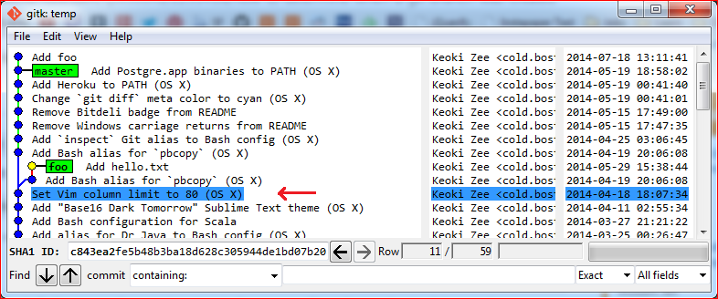

How to determine when a Git branch was created?
Is there a way to determine when a Git branch was created? I have a branch in my repo and and I don't remember creating it and thought maybe seeing the creation timestamp would jog my memory.
Answer
Use
git show --summary `git merge-base foo master`
If you’d rather see it in context using gitk, then use
gitk --all --select-commit=`git merge-base foo master`
(where foo is the name of the branch you are looking for.)

Suggest
Use
git show --summary `git merge-base foo master`
If you’d rather see it in context using gitk, then use
gitk --all --select-commit=`git merge-base foo master`
(where foo is the name of the branch you are looking for.)